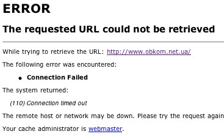

|
Ще сьогодні приблизно в обідній час (за японським часом) я мав змогу відкривати і читати obkom.net.ua. Зараз (10-а вечора, 29 жовтня) сайт перестав працювати. Мабуть таки прогнози щодо планів влади перекрити доступ до інтернету виявилися правдивими. Останній матеріал, який мені вдалося здублювати з Обкому тут, на Краянах — Колишній чекіст про візит Путіна і українські вибори |
 |
|
У п'ятницю готуються провокація проти сайту "Обком", яка буде здійснена за допомогою спецслужб. Про це заявив Микола Томенко в коментарі "Українській правді" "Цю провокація відбувається за участю представників СБУ. Якщо раніше використовували просто методи блокування сайтів, то тепер планується механізм офіційного закриття", - сказав Томенко. "Якщо це відбудеться, це лише підтверджує, що існує централізовано підготовлений список медіа, які повинні не працювати щонайменше 29 жовтня-1 листопада", - сказав Томенко. Тим часом на самому сайті "Обком" з'явилося повідомлення, що в п'ятницю інтернет-видання оновлюватися не буде. |
Існує інформація, що в провайдера "Обкому" забирають сервер. У то же час сайт запрошує читачів читати їх 31 жовтня: "Заходьте, буде цікаво". Олексій Міронов у розмові з "Українською правдою" поки утримався від коментарів. Він сказав, що напередодні були проблеми з доступом до сайту в певних регіонах. За словами Міронова, він живий-здоровий і перебуває на свободі. Як відомо, у 2002 році податкова уже влаштовувала обшуки в офісі "Обкому", в результаті чого видання тривалий час не виходило. |
Створений : dmytro.
останні зміни: П'ятниця 29 з October, 2004 22:29:07 JST dmytro.
Оригінал документу знаходиться на http://tiki/kraiany/tiki/tiki-index.php?page=%D1%81%D0%B5%D1%80%D0%B2%D0%B5%D1%80%20%D0%9E%D0%B1%D0%BA%D0%BE%D0%BC%D1%83%20%D0%BF%D0%B5%D1%80%D0%B5%D1%81%D1%82%D0%B0%D0%B2%20%D0%BF%D1%80%D0%B0%D1%86%D1%8E%D0%B2%D0%B0%D1%82%D0%B8